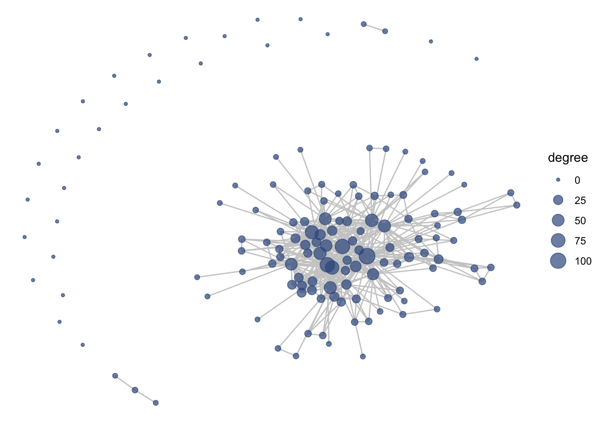
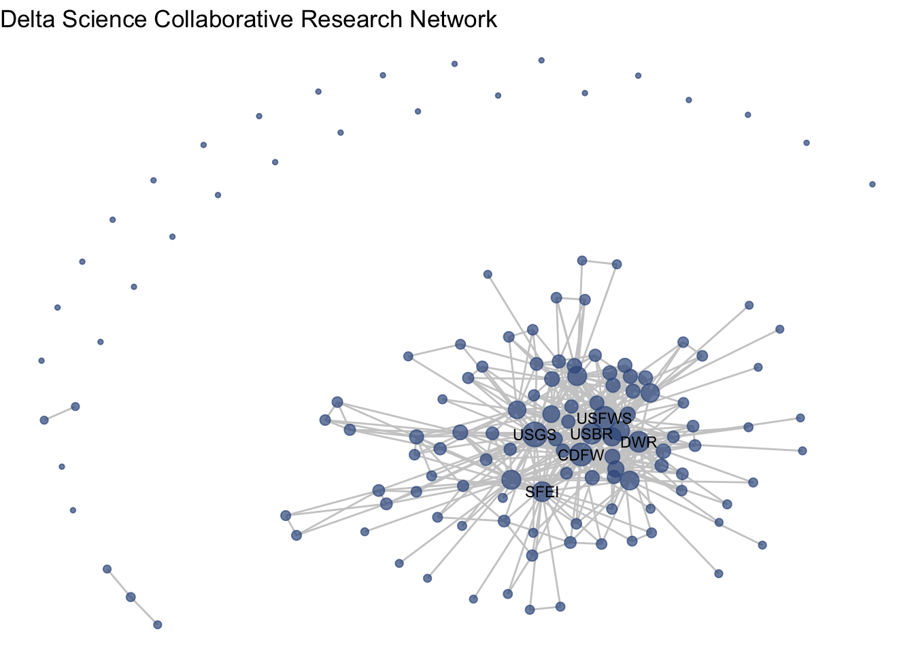
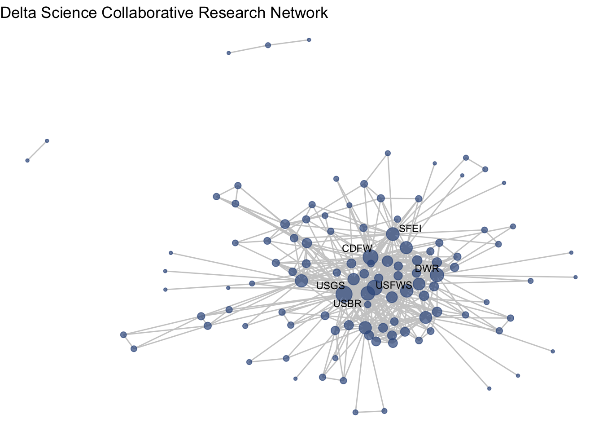
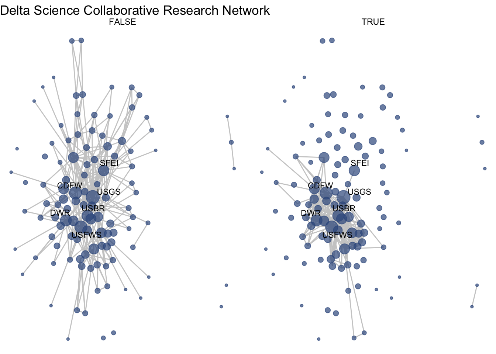

5 One-mode visualization
5.1 Introduction
5.1.1 Visualization goals:
- What does the collaborative network of Delta science research look like?
- Do we see any particular research communities emerge across these collaborations? (community detection + representing node attributes by color)
- How have research collaborations changed over time? (make subgraphs based on edge attribute + make multiple plots with fixed coordinates)
5.1.2 Preparing to work with network
We are going to stick to only working with the network package, even though the functions we will use for visualization are compatible with both objects. However, there are commonly-used network functions in each package, igraph and network, that mask one another. For instance:
sna::degree()
igraph::degree()To avoid confusion and masking in R, we are going to detach the igraph package.
detach("package:igraph", unload = TRUE)## Loading required package: statnet.common##
## Attaching package: 'statnet.common'## The following objects are masked from 'package:base':
##
## attr, order## Loading required package: network##
## 'network' 1.18.1 (2023-01-24), part of the Statnet Project
## * 'news(package="network")' for changes since last version
## * 'citation("network")' for citation information
## * 'https://statnet.org' for help, support, and other information## sna: Tools for Social Network Analysis
## Version 2.7-1 created on 2023-01-24.
## copyright (c) 2005, Carter T. Butts, University of California-Irvine
## For citation information, type citation("sna").
## Type help(package="sna") to get started.## Loading required package: ggplot2##
## Attaching package: 'dplyr'## The following objects are masked from 'package:stats':
##
## filter, lag## The following objects are masked from 'package:base':
##
## intersect, setdiff, setequal, unionnet1 %v% 'degree' <- sna::degree(net1)5.2 Getting started with ggraph
To introduce the basics of the ggraph package, we’re going to focus on our first question: What does the collaborative network of Delta science research look like?
ggraph uses the same approach as the ggplot2 grammar of graphics. This means is has three core components: 1. (network) data, 2. geometries, in this case edges and nodes, and 3. aesthetic mappings
ggraph(net1) +
geom_edge_link() +
geom_node_point()## Using "stress" as default layout## Warning: Using the `size` aesthetic in this geom was deprecated in ggplot2 3.4.0.
## ℹ Please use `linewidth` in the `default_aes` field and elsewhere instead.
These are some defaults at play here:
* layout = ‘auto’, which is the ‘stress’ layout
* default aesthetic mapping for geom_edges: x, y, xend, yend
* default aesthetic mapping for geom_node_point: x, y
5.2.1 Layouts
First, let’s talk about layouts. Here is a good resource: https://www.data-imaginist.com/2017/ggraph-introduction-layouts/
ggraph(net1, layout = 'stress', bbox = 5) +
geom_edge_link() +
geom_node_point()
ggraph(net1, layout = 'kk') +
geom_edge_link() +
geom_node_point()
ggraph(net1, layout = 'fr') +
geom_edge_link() +
geom_node_point()
ggraph(net1, layout = 'tree') +
geom_edge_link() +
geom_node_point()
ggraph(net1, layout = 'circle') +
geom_edge_link() +
geom_node_point() ### Removing isolates?
### Removing isolates?
isolates(net1)## [1] 5 6 10 14 16 18 26 33 37 42 46 50 56 58 69 76 77 79 97
## [20] 106 108 115 117 127 131 134 137Draft…
5.2.2 Aesthetics, themes
Now let’s start adding some aesthetics, much like we would with a ggplot to improve overall appeal
Reminder about colors. I liek to set a colors object and call upon it
viridis::viridis(8)## [1] "#440154FF" "#46337EFF" "#365C8DFF" "#277F8EFF" "#1FA187FF" "#4AC16DFF"
## [7] "#9FDA3AFF" "#FDE725FF"clrs <- c("#440154FF", "#46337EFF", "#365C8DFF", "#277F8EFF",
"#1FA187FF", "#4AC16DFF", "#9FDA3AFF", "#FDE725FF")We can change colors and assign additional aestehtics to the figure.
ggraph(net1, layout = 'fr') +
geom_edge_link(width = 0.5, alpha = 0.5, color = "gray70") +
geom_node_point(aes(size = net1 %v% 'degree'), color = clrs[4]) We can also add themes and labels, just like with ggplot2.
ggraph(net1, layout = 'fr') +
geom_edge_link(width = 0.5, alpha = 0.5, color = "gray70") +
geom_node_point(aes(size = net1 %v% 'degree'), color = clrs[4]) +
theme_void() +
theme(legend.position = "none") +
labs(title = "Delta Science Collaborative Research Network")
Notice it changes every time, a little bit. You can set your seed (every time before you plot to keep it consistent.)
5.2.3 Node labels
We have a variable that is our names, but it might be a bit overwhelming
ggraph(net1, layout = 'fr') +
geom_edge_link(width = 0.5, alpha = 0.5, color = "gray70") +
geom_node_point(aes(size = net1 %v% 'degree'), color = clrs[4]) +
theme_void() +
theme_void() +
theme(legend.position = "none") +
labs(title = "Delta Science Collaborative Research Network") +
geom_node_text(aes(label = net1 %v% 'name'),
size = 3,
color="black")
Let’s be selective based on degree. Let’s say we want to take the top 5-degree nodes and label them.
topdeg <- data.frame("deg" = net1 %v% 'degree') %>%
top_n(5)## Selecting by degnet1 %v% 'labels' <- ifelse((net1 %v% 'degree') %in% topdeg$deg,
net1 %v% 'name', '')Now we have a sparse label attribute
net1 %v% 'labels'## [1] "" "" "" "" "" "" "" "CDFW" ""
## [10] "" "" "" "" "" "DWR" "" "" ""
## [19] "" "" "" "" "" "" "" "" ""
## [28] "" "" "" "" "" "" "" "" ""
## [37] "" "" "" "" "" "" "" "" ""
## [46] "" "" "" "" "" "" "" "" ""
## [55] "" "" "" "" "" "" "" "" ""
## [64] "" "" "" "" "" "" "" "" ""
## [73] "" "" "" "" "" "" "" "" ""
## [82] "" "" "" "" "" "" "" "" ""
## [91] "" "" "" "" "" "" "" "" ""
## [100] "" "" "USBR" "" "" "" "" "" ""
## [109] "" "" "USFWS" "" "USGS" "" "" "" ""
## [118] "" "" "" "" "" "" "" "" ""
## [127] "" "" "" "" "" "" "" "" ""
## [136] "" "" "" ""And so it can make our plotting a bit better
ggraph(net1, layout = 'fr') +
geom_edge_link(width = 0.5, alpha = 0.5, color = "gray70") +
geom_node_point(aes(size = net1 %v% 'degree'), color = clrs[4]) +
theme_void() +
theme(legend.position = "none") +
labs(title = "Delta Science Collaborative Research Network") +
geom_node_text(aes(label = net1 %v% 'labels'),
size = 3,
color="black") We want text not to overlap
ggraph(net1, layout = 'fr') +
geom_edge_link(width = 0.5, alpha = 0.5, color = "gray70") +
geom_node_point(aes(size = net1 %v% 'degree'), color = clrs[4]) +
theme_void() +
theme(legend.position = "none") +
labs(title = "Delta Science Collaborative Research Network") +
geom_node_text(aes(label = net1 %v% 'labels'),
size = 3,
color="black",
repel = T)
Now that we’ve got that down as a base, I want to set this as a function so that we can move through other material a little more smoothly
netplot_function <- function(netname){
p <- ggraph(netname, layout = 'fr') +
geom_edge_link(width = 0.5, alpha = 0.5, color = "gray70") +
geom_node_point(aes(size = netname %v% 'degree'),
color = clrs[6]) +
theme_void() +
theme(legend.position = "none") +
geom_node_text(aes(label = netname %v% 'labels'),
family = "Times",
size = 3,
color="black", repel = T)
return(p)
}5.3 Community detection
Often we’re curious about whether or not there is some pattern within that giant plate of spaghetti. Are some organizations linking with certain others on a more regular basis? We might want to do some community detection approaches.
Broadly, community detection is…
5.3.1 Community is broadly defined
Have there been certain communities of research over time?
The one thing I think igraph has going for it is community detection.
?igraph::cluster_walktrap() # need to specify stepswt <- igraph::cluster_walktrap(g1)
table(wt$membership) # 20 communities, where most are in community 1##
## 1 2 3 4 5 6 7 8 9 10 11 12 13 14 15 16 17 18 19 20 21 22 23 24 25 26
## 53 12 5 7 14 3 2 2 2 2 1 1 1 1 1 1 1 1 1 1 1 1 1 1 1 1
## 27 28 29 30 31 32 33 34 35 36 37 38 39 40 41 42 43 44 45 46 47
## 1 1 1 1 1 1 1 1 1 1 1 1 1 1 1 1 1 1 1 1 1In network there is the equivalent cluster function
?sna::equiv.clust()5.3.2 Equivalence clusters
ec <- equiv.clust(net1)
plot(ec)
length(unique(ec$cluster$height))## [1] 30nblocks = 30
sbm <- blockmodel(net1, ec, k = nblocks)
sbm##
## Network Blockmodel:
##
## Block membership:
##
## 49590 49592 49593 49594 49598 49600 49601 49602 49603 49604 49605 49606 49607
## 1 1 1 2 1 1 1 3 4 1 5 4 1
## 49608 49609 49610 49611 49613 49614 49615 49616 49618 49619 49621 49622 49623
## 1 6 1 7 1 1 8 9 10 1 1 1 1
## 49624 49625 49626 49630 49631 49633 49634 49635 49636 49639 49640 49641 49642
## 10 11 1 1 9 1 1 12 1 2 1 13 1
## 49644 49645 49646 49647 49649 49651 49652 49654 49655 49656 49661 49662 49663
## 1 1 1 7 7 1 1 9 7 14 1 1 1
## 49664 49665 49667 49668 49669 49670 49671 49673 49674 49675 49676 49677 49678
## 2 14 2 1 12 1 1 1 10 8 15 1 13
## 49681 49682 49684 49685 49686 49687 49689 49691 49692 49693 49694 49696 49697
## 16 17 13 1 1 1 1 1 1 18 1 1 14
## 49700 49702 49703 49704 49707 49708 49709 49710 49711 49712 49714 49715 49716
## 1 19 1 1 20 21 1 1 1 12 1 10 4
## 49717 49718 49720 49723 49724 49726 49727 49728 49729 49730 49731 49732 49733
## 8 1 14 12 1 1 22 23 24 24 25 15 26
## 49735 49736 49737 49738 49739 49740 49741 49742 49743 49744 49745 49747 49748
## 24 1 15 1 15 27 28 13 29 24 1 10 1
## 49749 49750 49751 49752 49753 49754 49755 49756 49757 49759 49760 49761 49762
## 10 30 2 2 1 1 1 1 1 1 1 1 12
## 49763 49764 49765 49766 49767 49769 49770 49773 49774
## 1 1 15 1 1 1 1 15 1
##
## Reduced form blockmodel:
##
## 49590 49592 49593 49594 49598 49600 49601 49602 49603 49604 49605 49606 49607 49608 49609 49610 49611 49613 49614 49615 49616 49618 49619 49621 49622 49623 49624 49625 49626 49630 49631 49633 49634 49635 49636 49639 49640 49641 49642 49644 49645 49646 49647 49649 49651 49652 49654 49655 49656 49661 49662 49663 49664 49665 49667 49668 49669 49670 49671 49673 49674 49675 49676 49677 49678 49681 49682 49684 49685 49686 49687 49689 49691 49692 49693 49694 49696 49697 49700 49702 49703 49704 49707 49708 49709 49710 49711 49712 49714 49715 49716 49717 49718 49720 49723 49724 49726 49727 49728 49729 49730 49731 49732 49733 49735 49736 49737 49738 49739 49740 49741 49742 49743 49744 49745 49747 49748 49749 49750 49751 49752 49753 49754 49755 49756 49757 49759 49760 49761 49762 49763 49764 49765 49766 49767 49769 49770 49773 49774
## Block 1 Block 2 Block 3 Block 4 Block 5 Block 6
## Block 1 0.004185693 0.002283105 0.09589041 0.00456621 0.02739726 0.1369863
## Block 2 0.002283105 0.666666667 0.00000000 0.00000000 0.00000000 0.0000000
## Block 3 0.095890411 0.000000000 NaN 1.00000000 1.00000000 1.0000000
## Block 4 0.004566210 0.000000000 1.00000000 0.66666667 0.66666667 0.6666667
## Block 5 0.027397260 0.000000000 1.00000000 0.66666667 NaN 1.0000000
## Block 6 0.136986301 0.000000000 1.00000000 0.66666667 1.00000000 NaN
## Block 7 0.006849315 0.000000000 1.00000000 0.00000000 0.00000000 1.0000000
## Block 8 0.004566210 0.000000000 0.33333333 0.00000000 0.33333333 0.3333333
## Block 9 0.000000000 0.000000000 1.00000000 0.00000000 0.00000000 0.6666667
## Block 10 0.002283105 0.027777778 0.83333333 0.00000000 0.00000000 0.0000000
## Block 11 0.041095890 0.000000000 1.00000000 0.66666667 1.00000000 1.0000000
## Block 12 0.000000000 0.000000000 0.00000000 0.00000000 0.00000000 0.0000000
## Block 13 0.000000000 0.000000000 0.00000000 0.00000000 0.00000000 0.0000000
## Block 14 0.003424658 0.166666667 1.00000000 0.00000000 0.00000000 0.0000000
## Block 15 0.000000000 0.000000000 0.00000000 0.00000000 0.00000000 0.0000000
## Block 16 0.054794521 0.000000000 1.00000000 0.00000000 0.00000000 1.0000000
## Block 17 0.082191781 0.000000000 1.00000000 0.00000000 1.00000000 1.0000000
## Block 18 0.000000000 0.000000000 1.00000000 0.00000000 0.00000000 1.0000000
## Block 19 0.000000000 0.000000000 0.00000000 0.00000000 1.00000000 0.0000000
## Block 20 0.109589041 0.500000000 1.00000000 0.00000000 0.00000000 1.0000000
## Block 21 0.041095890 0.000000000 0.00000000 0.00000000 1.00000000 1.0000000
## Block 22 0.013698630 0.500000000 1.00000000 0.00000000 0.00000000 1.0000000
## Block 23 0.041095890 0.000000000 1.00000000 0.00000000 0.00000000 1.0000000
## Block 24 0.000000000 0.000000000 0.50000000 0.00000000 0.00000000 0.0000000
## Block 25 0.068493151 0.000000000 1.00000000 0.00000000 0.00000000 1.0000000
## Block 26 0.041095890 0.000000000 1.00000000 0.00000000 1.00000000 0.0000000
## Block 27 0.027397260 0.000000000 1.00000000 0.66666667 0.00000000 1.0000000
## Block 28 0.082191781 0.000000000 1.00000000 0.66666667 0.00000000 1.0000000
## Block 29 0.136986301 0.333333333 1.00000000 0.33333333 0.00000000 1.0000000
## Block 30 0.082191781 0.166666667 1.00000000 0.66666667 1.00000000 1.0000000
## Block 7 Block 8 Block 9 Block 10 Block 11 Block 12
## Block 1 0.006849315 0.00456621 0.0000000 0.002283105 0.04109589 0.0
## Block 2 0.000000000 0.00000000 0.0000000 0.027777778 0.00000000 0.0
## Block 3 1.000000000 0.33333333 1.0000000 0.833333333 1.00000000 0.0
## Block 4 0.000000000 0.00000000 0.0000000 0.000000000 0.66666667 0.0
## Block 5 0.000000000 0.33333333 0.0000000 0.000000000 1.00000000 0.0
## Block 6 1.000000000 0.33333333 0.6666667 0.000000000 1.00000000 0.0
## Block 7 0.500000000 0.00000000 0.0000000 0.000000000 1.00000000 0.0
## Block 8 0.000000000 1.00000000 0.0000000 0.000000000 0.00000000 0.0
## Block 9 0.000000000 0.00000000 0.3333333 0.000000000 0.33333333 0.0
## Block 10 0.000000000 0.00000000 0.0000000 0.466666667 0.33333333 0.0
## Block 11 1.000000000 0.00000000 0.3333333 0.333333333 NaN 0.0
## Block 12 0.000000000 0.00000000 0.0000000 0.000000000 0.00000000 0.8
## Block 13 0.000000000 0.08333333 0.0000000 0.000000000 0.00000000 0.0
## Block 14 0.000000000 0.00000000 0.0000000 0.000000000 0.00000000 0.0
## Block 15 0.000000000 0.00000000 0.0000000 0.000000000 0.00000000 0.0
## Block 16 1.000000000 0.00000000 0.0000000 0.000000000 1.00000000 0.0
## Block 17 0.000000000 0.33333333 0.0000000 0.000000000 1.00000000 0.0
## Block 18 0.000000000 1.00000000 1.0000000 0.000000000 1.00000000 0.0
## Block 19 0.250000000 0.00000000 0.3333333 0.000000000 1.00000000 0.0
## Block 20 0.250000000 0.00000000 0.3333333 0.500000000 1.00000000 0.0
## Block 21 0.250000000 0.00000000 0.0000000 0.000000000 0.00000000 0.0
## Block 22 0.000000000 1.00000000 1.0000000 0.000000000 0.00000000 0.0
## Block 23 1.000000000 0.33333333 1.0000000 0.000000000 1.00000000 0.0
## Block 24 0.000000000 0.00000000 0.0000000 0.000000000 0.00000000 0.0
## Block 25 0.500000000 0.00000000 0.6666667 0.000000000 1.00000000 0.0
## Block 26 0.000000000 0.33333333 0.3333333 0.000000000 0.00000000 0.0
## Block 27 1.000000000 0.00000000 0.0000000 0.000000000 1.00000000 0.0
## Block 28 1.000000000 0.00000000 1.0000000 0.000000000 1.00000000 0.0
## Block 29 0.500000000 1.00000000 1.0000000 0.500000000 1.00000000 0.6
## Block 30 0.000000000 0.00000000 0.0000000 0.000000000 1.00000000 0.6
## Block 13 Block 14 Block 15 Block 16 Block 17 Block 18
## Block 1 0.00000000 0.003424658 0 0.05479452 0.08219178 0.0
## Block 2 0.00000000 0.166666667 0 0.00000000 0.00000000 0.0
## Block 3 0.00000000 1.000000000 0 1.00000000 1.00000000 1.0
## Block 4 0.00000000 0.000000000 0 0.00000000 0.00000000 0.0
## Block 5 0.00000000 0.000000000 0 0.00000000 1.00000000 0.0
## Block 6 0.00000000 0.000000000 0 1.00000000 1.00000000 1.0
## Block 7 0.00000000 0.000000000 0 1.00000000 0.00000000 0.0
## Block 8 0.08333333 0.000000000 0 0.00000000 0.33333333 1.0
## Block 9 0.00000000 0.000000000 0 0.00000000 0.00000000 1.0
## Block 10 0.00000000 0.000000000 0 0.00000000 0.00000000 0.0
## Block 11 0.00000000 0.000000000 0 1.00000000 1.00000000 1.0
## Block 12 0.00000000 0.000000000 0 0.00000000 0.00000000 0.0
## Block 13 0.66666667 0.000000000 0 0.00000000 0.25000000 0.0
## Block 14 0.00000000 1.000000000 0 0.00000000 0.00000000 0.0
## Block 15 0.00000000 0.000000000 1 0.00000000 1.00000000 0.0
## Block 16 0.00000000 0.000000000 0 NaN 0.00000000 0.0
## Block 17 0.25000000 0.000000000 1 0.00000000 NaN 0.0
## Block 18 0.00000000 0.000000000 0 0.00000000 0.00000000 NaN
## Block 19 0.00000000 0.000000000 0 0.00000000 0.00000000 1.0
## Block 20 0.00000000 0.250000000 0 0.00000000 0.00000000 1.0
## Block 21 0.00000000 0.250000000 0 0.00000000 1.00000000 0.0
## Block 22 0.75000000 0.000000000 0 0.00000000 0.00000000 1.0
## Block 23 0.00000000 0.000000000 0 1.00000000 1.00000000 1.0
## Block 24 0.12500000 0.000000000 0 0.00000000 0.00000000 0.5
## Block 25 0.00000000 1.000000000 1 1.00000000 1.00000000 1.0
## Block 26 0.00000000 0.000000000 1 0.00000000 1.00000000 1.0
## Block 27 0.50000000 0.000000000 1 1.00000000 1.00000000 0.0
## Block 28 1.00000000 0.250000000 1 1.00000000 1.00000000 1.0
## Block 29 0.50000000 0.500000000 1 1.00000000 1.00000000 1.0
## Block 30 0.00000000 1.000000000 0 1.00000000 0.00000000 0.0
## Block 19 Block 20 Block 21 Block 22 Block 23 Block 24
## Block 1 0.0000000 0.1095890 0.04109589 0.01369863 0.04109589 0.000
## Block 2 0.0000000 0.5000000 0.00000000 0.50000000 0.00000000 0.000
## Block 3 0.0000000 1.0000000 0.00000000 1.00000000 1.00000000 0.500
## Block 4 0.0000000 0.0000000 0.00000000 0.00000000 0.00000000 0.000
## Block 5 1.0000000 0.0000000 1.00000000 0.00000000 0.00000000 0.000
## Block 6 0.0000000 1.0000000 1.00000000 1.00000000 1.00000000 0.000
## Block 7 0.2500000 0.2500000 0.25000000 0.00000000 1.00000000 0.000
## Block 8 0.0000000 0.0000000 0.00000000 1.00000000 0.33333333 0.000
## Block 9 0.3333333 0.3333333 0.00000000 1.00000000 1.00000000 0.000
## Block 10 0.0000000 0.5000000 0.00000000 0.00000000 0.00000000 0.000
## Block 11 1.0000000 1.0000000 0.00000000 0.00000000 1.00000000 0.000
## Block 12 0.0000000 0.0000000 0.00000000 0.00000000 0.00000000 0.000
## Block 13 0.0000000 0.0000000 0.00000000 0.75000000 0.00000000 0.125
## Block 14 0.0000000 0.2500000 0.25000000 0.00000000 0.00000000 0.000
## Block 15 0.0000000 0.0000000 0.00000000 0.00000000 0.00000000 0.000
## Block 16 0.0000000 0.0000000 0.00000000 0.00000000 1.00000000 0.000
## Block 17 0.0000000 0.0000000 1.00000000 0.00000000 1.00000000 0.000
## Block 18 1.0000000 1.0000000 0.00000000 1.00000000 1.00000000 0.500
## Block 19 NaN 1.0000000 0.00000000 0.00000000 0.00000000 0.000
## Block 20 1.0000000 NaN 1.00000000 1.00000000 1.00000000 0.000
## Block 21 0.0000000 1.0000000 NaN 0.00000000 0.00000000 0.000
## Block 22 0.0000000 1.0000000 0.00000000 NaN 1.00000000 0.000
## Block 23 0.0000000 1.0000000 0.00000000 1.00000000 NaN 0.000
## Block 24 0.0000000 0.0000000 0.00000000 0.00000000 0.00000000 1.000
## Block 25 0.0000000 1.0000000 0.00000000 1.00000000 1.00000000 0.500
## Block 26 1.0000000 0.0000000 0.00000000 1.00000000 1.00000000 1.000
## Block 27 0.0000000 1.0000000 0.00000000 0.00000000 1.00000000 0.250
## Block 28 1.0000000 1.0000000 1.00000000 1.00000000 1.00000000 0.500
## Block 29 0.0000000 1.0000000 1.00000000 1.00000000 1.00000000 0.500
## Block 30 1.0000000 1.0000000 0.00000000 0.00000000 0.00000000 0.000
## Block 25 Block 26 Block 27 Block 28 Block 29 Block 30
## Block 1 0.06849315 0.04109589 0.02739726 0.08219178 0.1369863 0.08219178
## Block 2 0.00000000 0.00000000 0.00000000 0.00000000 0.3333333 0.16666667
## Block 3 1.00000000 1.00000000 1.00000000 1.00000000 1.0000000 1.00000000
## Block 4 0.00000000 0.00000000 0.66666667 0.66666667 0.3333333 0.66666667
## Block 5 0.00000000 1.00000000 0.00000000 0.00000000 0.0000000 1.00000000
## Block 6 1.00000000 0.00000000 1.00000000 1.00000000 1.0000000 1.00000000
## Block 7 0.50000000 0.00000000 1.00000000 1.00000000 0.5000000 0.00000000
## Block 8 0.00000000 0.33333333 0.00000000 0.00000000 1.0000000 0.00000000
## Block 9 0.66666667 0.33333333 0.00000000 1.00000000 1.0000000 0.00000000
## Block 10 0.00000000 0.00000000 0.00000000 0.00000000 0.5000000 0.00000000
## Block 11 1.00000000 0.00000000 1.00000000 1.00000000 1.0000000 1.00000000
## Block 12 0.00000000 0.00000000 0.00000000 0.00000000 0.6000000 0.60000000
## Block 13 0.00000000 0.00000000 0.50000000 1.00000000 0.5000000 0.00000000
## Block 14 1.00000000 0.00000000 0.00000000 0.25000000 0.5000000 1.00000000
## Block 15 1.00000000 1.00000000 1.00000000 1.00000000 1.0000000 0.00000000
## Block 16 1.00000000 0.00000000 1.00000000 1.00000000 1.0000000 1.00000000
## Block 17 1.00000000 1.00000000 1.00000000 1.00000000 1.0000000 0.00000000
## Block 18 1.00000000 1.00000000 0.00000000 1.00000000 1.0000000 0.00000000
## Block 19 0.00000000 1.00000000 0.00000000 1.00000000 0.0000000 1.00000000
## Block 20 1.00000000 0.00000000 1.00000000 1.00000000 1.0000000 1.00000000
## Block 21 0.00000000 0.00000000 0.00000000 1.00000000 1.0000000 0.00000000
## Block 22 1.00000000 1.00000000 0.00000000 1.00000000 1.0000000 0.00000000
## Block 23 1.00000000 1.00000000 1.00000000 1.00000000 1.0000000 0.00000000
## Block 24 0.50000000 1.00000000 0.25000000 0.50000000 0.5000000 0.00000000
## Block 25 NaN 1.00000000 1.00000000 1.00000000 1.0000000 1.00000000
## Block 26 1.00000000 NaN 1.00000000 1.00000000 1.0000000 1.00000000
## Block 27 1.00000000 1.00000000 NaN 1.00000000 1.0000000 0.00000000
## Block 28 1.00000000 1.00000000 1.00000000 NaN 1.0000000 1.00000000
## Block 29 1.00000000 1.00000000 1.00000000 1.00000000 NaN 1.00000000
## Block 30 1.00000000 1.00000000 0.00000000 1.00000000 1.0000000 NaNmembership <- data.frame("block" = sbm$block.membership,
"id" = ec$cluster$order)
membership <- membership[order(membership$id),]
net1 %v% 'membership' <- membership$block
table(net1 %v% 'membership')##
## 1 2 3 4 5 6 7 8 9 10 11 12 13 14 15 16 17 18 19 20 21 22 23 24 25 26
## 73 6 1 3 1 1 4 3 3 6 1 5 4 4 6 1 1 1 1 1 1 1 1 4 1 1
## 27 28 29 30
## 1 1 1 1We could assign color to that membership… but some of those memberships are really not significant
ggraph(net1, layout = 'fr') +
geom_edge_link(width = 0.5, alpha = 0.5, color = "gray70") +
geom_node_point(aes(size = net1 %v% 'degree',
color = factor(net1 %v% 'membership',
levels = 1:30))) +
theme_void() +
geom_node_text(aes(label = net1 %v% 'labels'),
size = 3,
color="black",
repel = T) +
scale_color_viridis_d() +
labs(color = "Community", size = "Degree")
Manually create your own grouping
sig_blocks <- data.frame('corr' = diag(sbm$block.model),
'b' = 1:30) %>%
filter(!(is.nan(corr)) & corr > .5)
net1 %v% 'member_grp' <- ifelse(net1 %v% 'membership' == sig_blocks$b[1], 1,
ifelse(net1 %v% 'membership' == sig_blocks$b[2], 2,
ifelse(net1 %v% 'membership' == sig_blocks$b[3], 3,
ifelse(net1 %v% 'membership' == sig_blocks$b[4], 4,
ifelse(net1 %v% 'membership' == sig_blocks$b[5], 5,
ifelse(net1 %v% 'membership' == sig_blocks$b[6], 6,
ifelse(net1 %v% 'membership' == sig_blocks$b[7], 7,
ifelse(net1 %v% 'membership' == sig_blocks$b[8], 8,
9))))))))Now we can use the ‘member_grp’ node attribute, which associated large and correlated blocks with colors, as our color aesthetic.
ggraph(net1, layout = 'fr') +
geom_edge_link(width = 0.5, alpha = 0.5, color = "gray70") +
geom_node_point(aes(size = net1 %v% 'degree',
color = factor(net1 %v% 'member_grp'))) +
theme_void() +
geom_node_text(aes(label = net1 %v% 'labels'),
size = 3,
color="black",
repel = T) +
theme(legend.position = "none") +
scale_color_manual(values = c(clrs, "grey")) 
5.4 Longitudinal networks
Often you will want to induce subnetworks – based on edge attribute
5.4.1 Induce subgraphs by edge
net1 %v% 'id' <- net1 %v% 'vertex.names'
# Get the edges for each time period
t1 <- which(net1 %e% 'before_1980' == T)
t2 <- which(net1 %e% 'Y1980_1994' == T)
t3 <- which(net1 %e% 'Y1995_2009' == T)
t4 <- which(net1 %e% 'Y2010_2024' == T)
# Induce subgraphs based on those edges
net1_t1 <- network::get.inducedSubgraph(net1, eid = t1)
net1_t2 <- network::get.inducedSubgraph(net1, eid = t2)
net1_t3 <- network::get.inducedSubgraph(net1, eid = t3)
net1_t4 <- network::get.inducedSubgraph(net1, eid = t4)Now we have subgraphs
net1_t4## Network attributes:
## vertices = 60
## directed = FALSE
## hyper = FALSE
## loops = FALSE
## multiple = FALSE
## bipartite = FALSE
## total edges= 157
## missing edges= 0
## non-missing edges= 157
##
## Vertex attribute names:
## degree id labels member_grp membership mode name url vertex.names
##
## Edge attribute names:
## before_1980 Y1980_1994 Y1995_2009 Y2010_2024But note that our attributes remain from the whole network
(net1_t1 %v% 'degree')[(net1_t1 %v% 'name' == "SFEI")]## [1] 60(net1_t2 %v% 'degree')[(net1_t2 %v% 'name' == "SFEI")]## [1] 60But this is incorrect, so we want to reassign those values
net1_t1 %v% 'degree' <- sna::degree(net1_t1)
net1_t2 %v% 'degree' <- sna::degree(net1_t2)
net1_t3 %v% 'degree' <- sna::degree(net1_t3)
net1_t4 %v% 'degree' <- sna::degree(net1_t4)Since our degree value has changed, we also wanted to change our labels. We can write a function to do that
get_top_degree <- function(netname, n){
topdeg <- data.frame("deg" = netname %v% 'degree') %>%
top_n(n)
labels <- ifelse((netname %v% 'degree') %in% topdeg$deg,
netname %v% 'name', '')
return(labels)
}
net1_t1 %v% 'labels' <- get_top_degree(net1_t1, 5)## Selecting by degnet1_t2 %v% 'labels' <- get_top_degree(net1_t2, 5)## Selecting by degnet1_t3 %v% 'labels' <- get_top_degree(net1_t3, 5)## Selecting by degnet1_t4 %v% 'labels' <- get_top_degree(net1_t4, 5)## Selecting by degNow let’s plot one of our subgraphs. We can use the same netplot function
netplot_function(net1_t1)
netplot_function(net1_t2)
netplot_function(net1_t3)
netplot_function(net1_t4) The issue here is that it is hard to really visualize change because the layout changes every time to make the visualize look more like a network… So let’s fixing our coordinates. We want nodes to be in the same position in the plotting of every subgraph.
The issue here is that it is hard to really visualize change because the layout changes every time to make the visualize look more like a network… So let’s fixing our coordinates. We want nodes to be in the same position in the plotting of every subgraph.